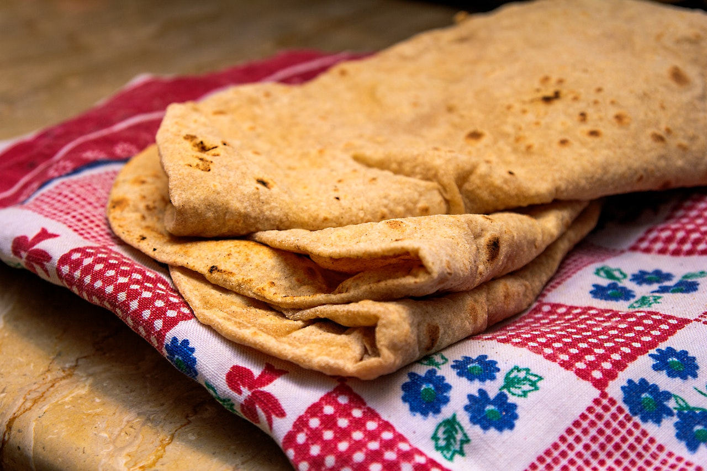

Chapathi

Description
Incredients
- Wheat flour - 1/2 KG
- Oil
- Salt
- Gee
- Chapathi maker
Steps:
- Get some wheat flour in a vessal and put needed amount of salt and using water mix thme until the flour didn't stick to hand.
- Leave it like 2 to 3 hours to marinate.
- After 2 to 3 hours make small rounds out of the flour.
- Using the chapathi maker spread the small round into big rounds.
- Heat it until it became golden brown color.